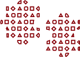
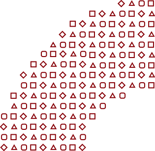
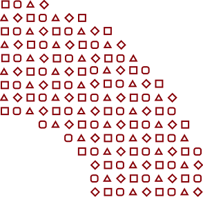

UNDERSTANDING
ecosystems, user needs and digital communication devices communication devices
1
realization interview
Conduct user interviews to build personal and user stories
In the second half of the year, we conducted interviews to find out
what our target audience wants from our science outreach.
Thanks to this, we were able to see what they liked, and adapt what we
intended to do. I suggest you look at our analysis if you want to see
what we learned from our interviews.
Web site accessibility analysis
Ergonomics and Accessibility
In order to understand the challenges of website accessibility, I
conducted several studies. First, I analyzed the PrimeVideo website. I
noted what I thought were the problems, and then I made a
questionnaire to see what the users think about it. Thanks to this, I
was able to do a complete analysis of the site.
Secondly, I studied the accessibility of the "SortiràParis" website by
taking into account what I observed on the previous website but also
by using an extension simulating disabilities.
2
